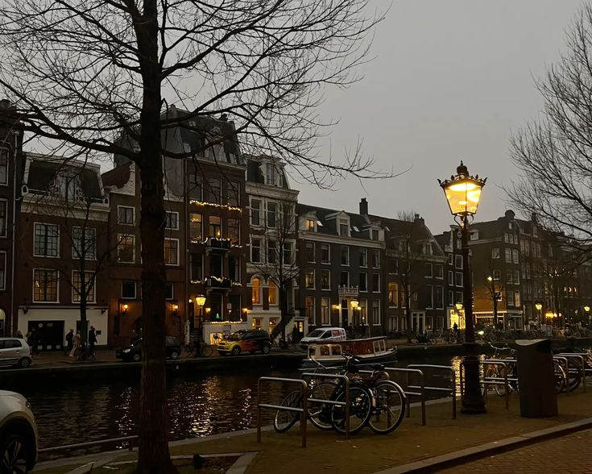

Olá, sou a Lígia, tenho 22 anos e moro em Pouso Alegre - MG! Sou entusiasta nata de cinema e séries, assim como de animes e mangás. Ou, de qualquer coisa que me entretenha!
| Japão | Coréia do Sul | Holanda |
|  |
Clique no botão para ver uma piadinha antes de ir embora.